섬세하고 탄탄한 얼굴라인을 위한
섬세하고 탄탄한 얼굴라인을 위한
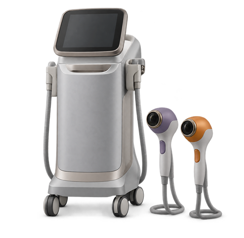
피부 탄력을 튜닝하다
복합 고주파 얼굴 리프팅
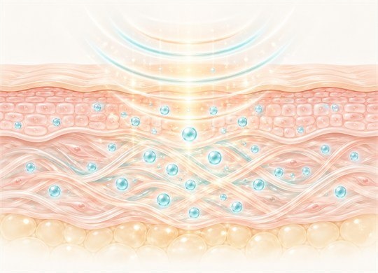
피부 탄력과 안티에이징을 책임지는 콜라겐
피부 속 콜라겐을 채워주는 가장 이상적인 주파수 40.68MHz로
기존의 고주파 시술보다 더 깊고 효과적인 에너지를 전달하는
고주파 윤곽 리프팅를 만나보세요.
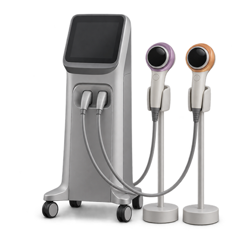
피부 탄력을 튜닝하다
복합 고주파 얼굴 리프팅
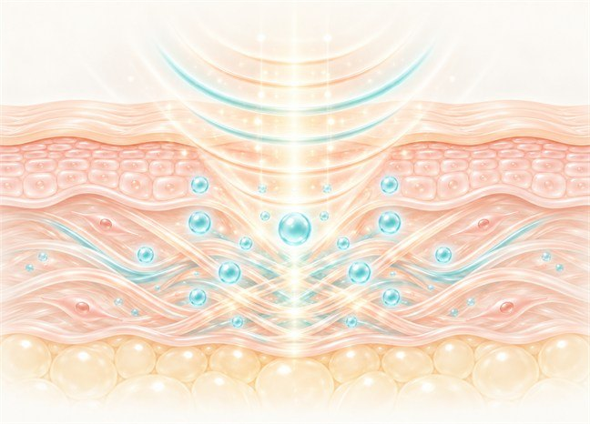
피부 탄력과 안티에이징을
책임지는 콜라겐
피부 속 콜라겐을 채워주는 가장 이상적인 주파수
40.68MHz로 기존의 고주파 시술보다 더 깊고 효과적인
에너지를 전달하는 고주파 윤곽 리프팅를 만나보세요.
point 01
온연피부과의원 전문의의 수많은 임상경험과 연구로 얻은
피부의 해부학적인 구조를 바탕으로 진단하고 시술을 진행합니다.
튠블루
(고주파 윤곽 리프팅)
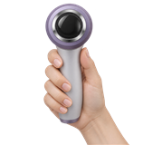
ㆍ진피 하부의 탄력을 개선하고 리프팅 변화를 통한 라인 개선
ㆍ콜라겐 생성으로 피부탄력 및 재생효과
ㆍ리프팅 효과
ㆍ앞볼/심부볼/팔자주름/턱라인 등 시술 가능
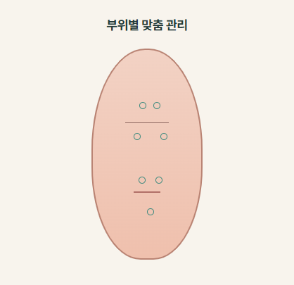
튠레드
(튠페리오비탈)
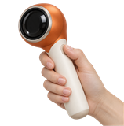
ㆍ눈가 및 입가 주름, 볼륨, 피부톤 개선
ㆍ콜라겐 생성으로 피부탄력 및 재생효과
ㆍ잔주름, 볼륨 개선효과
ㆍ이마/관자놀이/눈밑/팔자주름/입가주변 등 시술 가능
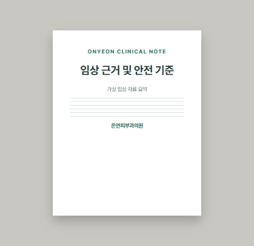
point 01
온연피부과의원 전문의의 수많은
임상경험과 연구로 얻은
피부의 해부학적인 구조를 바탕으로
진단하고 시술을 진행합니다.
point 02
고주파 윤곽 리프팅 리프팅은 기존 고주파 시술에 비해
더 깊고 더 강력하게 진료가 가능합니다.
피부 표피층과 진피층, 피하지방층 3단계 깊이 조절이
가능한 핸드피스로 최대 11MM까지 도달하는 에너지
피부 가장 깊은 곳까지 시술이 가능하기 때문에
피부 속부터 끌어올리는 리프팅과 탄력까지 완화를 돕습니다.
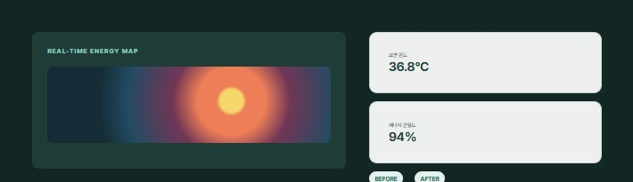
point 02
고주파 윤곽 리프팅 리프팅은 기존 고주파 시술에 비해
더 깊고 더 강력하게 진료가 가능합니다.
피부 표피층과 진피층, 피하지방층 3단계 깊이 조절이
가능한 핸드피스로 최대 11MM까지 도달하는 에너지
피부 가장 깊은 곳까지 시술이 가능하기 때문에
피부 속부터 끌어올리는 리프팅과 탄력까지 완화를 돕습니다.
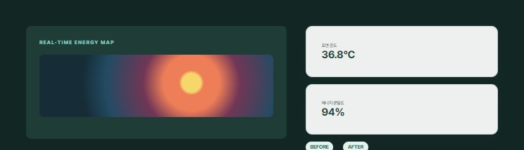
point 03
아이스컨택쿨링이라는 이중쿨링 방식으로 피부 표면을 42도~48도 사이로
유지시켜 편안하게 시술받으며 시술 흔적을 되도록 줄임합니다.
고주파 윤곽 리프팅의 이중쿨링 시스템은 시술 불편감의 두려움을 없애주고
빠르게 일상으로 돌아갈 힘을 가졌습니다.
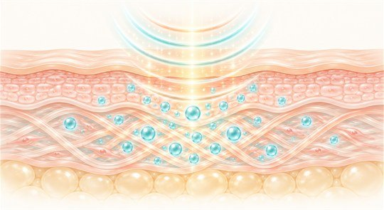
point 03
아이스컨택쿨링이라는 이중쿨링 방식으로
피부 표면을 42도~48도 사이로유지시켜 편안하게
시술받으며 시술 흔적을 되도록 줄임합니다.
고주파 윤곽 리프팅의 이중쿨링 시스템은 시술 불편감의
두려움을 없애주고빠르게 일상으로
돌아갈 힘을 가졌습니다.
이상적인 주파수로 만드는 깊은 아름다움
고주파 윤곽 리프팅의 확실한 변화는 숙련된 전문의의 기술과
만나면 충분히 높임 됩니다.
고주파 윤곽 리프팅 + 집중 윤곽 초음파
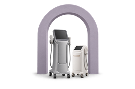
탄력 개선과 불필요한 지방제거로
매끄러운 페이스 라인
고주파 윤곽 리프팅 + 복합 파장리프팅
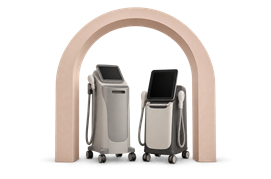
리프팅 + 리프팅
다른 효과 시너지
고주파 윤곽 리프팅 + 피부 재생 주사
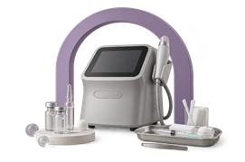
탄력있는 페이스라인에
결점없이 매끄러운 피부
온연만의 해부학적 접근, 섬세한 기술과
고주파 윤곽 리프팅의 기술력이 만나 더 탄력있고 매끈한 얼굴라인
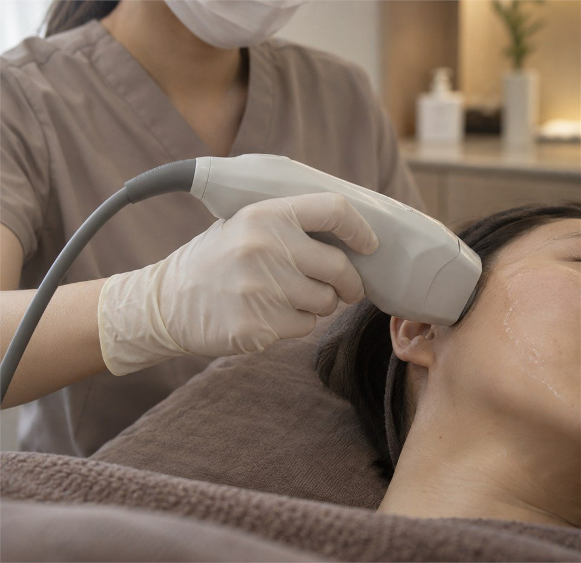
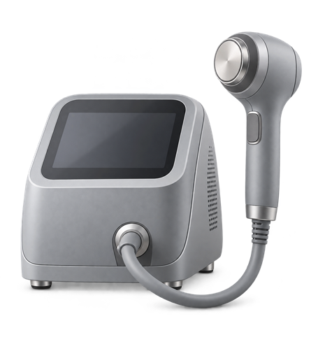
지방 파괴하고 라인을 튜닝하다
고주파 윤곽선 관리
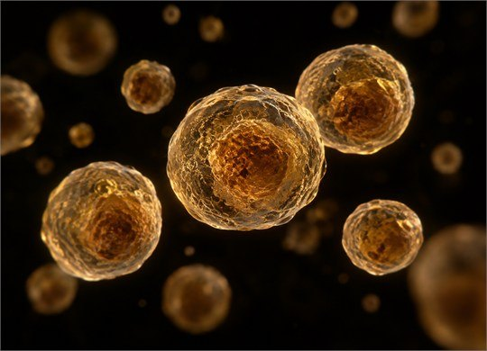
얼굴라인을 책임지는 요소 중 하나는 얼굴 속 지방
이중턱과 심부볼에 자리잡은 불필요한 지방세포만
선택적으로 파괴하고
사이즈를 감소시켜
기초부터 살피는 얼굴 라인을 완화할 수 있도록 돕습니다.
point 01
집중 윤곽 초음파의 기술로 지방세포를 파괴하는 시간, 단 8분입니다.
3D 입체초음파로 지방을 파괴하는 집중 윤곽 초음파만의 기술
물리적 에너지를 전달하는 횡파와 열에너지를 발생시키는 종파의 결합, 3D 입체초음파로
다른 조직의 손상없이 지방세포만 제거하기 때문에 안전하고 효과적인 시술이 가능합니다.
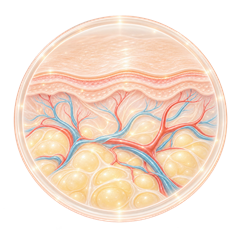
STEP.1
시술전,
단단한 지방 세포막
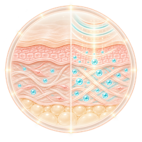
STEP.2
선택적인
지방세포막 파괴
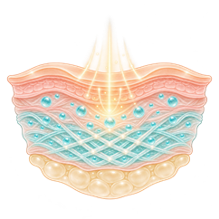
STEP.3
손상된 지방세포의
혈류방출을 통한 사이즈 감소효과
(4주 뒤 사이즈 감소)
point 01
집중 윤곽 초음파의 기술로 지방세포를 파괴하는 시간, 단 8분입니다.
3D 입체초음파로 지방을 파괴하는 집중 윤곽 초음파만의 기술
물리적 에너지를 전달하는 횡파와 열에너지를 발생시키는 종파의 결합, 3D 입체초음파로
다른 조직의 손상없이 지방세포만 제거하기 때문에 안전하고 효과적인 시술이 가능합니다.
point 02
아이스컨택쿨링이라는 이중쿨링 방식으로 피부 표면을 42도~48도 사이로
유지시켜 편안하게 시술받으며 시술 흔적을 되도록 줄임합니다.
집중 윤곽 초음파의 이중쿨링 시스템은 시술 불편감의 두려움을 없애주고
빠르게 일상으로 돌아갈 힘을 가졌습니다.
point 02
아이스컨택쿨링이라는 이중쿨링 방식으로
피부 표면을 42도~48도 사이로 유지시켜 편안하게
시술받으며 시술 흔적을 되도록 줄임합니다.
집중 윤곽 초음파의 이중쿨링 시스템은 시술 불편감의
두려움을 없애주고 빠르게 일상으로
돌아갈 힘을 가졌습니다.
3D 초음파로 만드는 매끈한 라인
집중 윤곽 초음파의 확실한 변화는 숙련된 전문의의
기술과 만나면 충분히 높임 됩니다.
집중 윤곽 초음파 + 고주파 윤곽 리프팅
탄력 개선과 불필요한 지방제거로
매끄러운 페이스 라인
집중 윤곽 초음파 + 복합 파장리프팅
리프팅, 타이트닝, 브라이트닝에
지방제거로 완벽하게
집중 윤곽 초음파 + 집속 초음파 리프팅
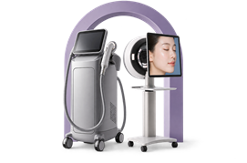
콜라겐 재생으로 탄력있고
지방제거로 더욱 갸름하게
온연만의 해부학적 접근, 섬세한 기술과
집중 윤곽 초음파의 기술력이 만나 더 탄력있고 매끈한 얼굴라인
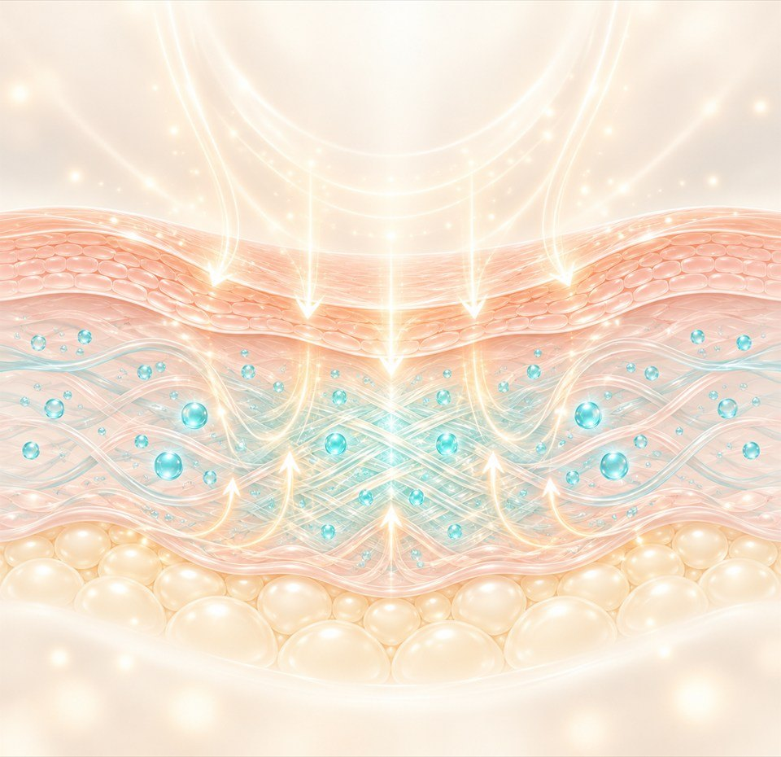
ONYEON SYSTEM
01
피부가 건강해지고
삶이 즐거워지는 변화
온연피부과의원는 피부를 넘어
당신의 삶을 바라봅니다.
편하게 고민을 나누고 제대로 관리 받고
피부가 좋아지는 모든 과정이 즐겁기를 바랍니다.
02
피부 전문 의료진의
기술과 끊임없는 연구
대한민국 2% 피부과 전문의로 구성된
온연피부과의원. 의료진 모두가 더 아름다운
피부를 위해 끊임없이 연구하고 노력합니다.
03
피부를 꿰뚫어 보는
과학적인 피부진단
보이는 증상뿐만 아니라 잠재된 질환,
시술 후의 변화까지 예측해 피부 속 문제를
정확하게 진단하고 진료합니다.
04
사람과 장비가 빚어낸
질 높은 의료서비스
숙련된 피부과 전문의와 십 수년 간
호흡을 맞추어 온 배테랑 의료진,
그리고 최첨단 안전장비 시스템.
온연피부과의원의 모든 것입니다.
ONYEON SYSTEM
01
피부가 건강해지고
삶이 즐거워지는 변화
온연피부과의원는 피부를 넘어
당신의 삶을 바라봅니다.
편하게 고민을 나누고 제대로 관리 받고
피부가 좋아지는 모든 과정이 즐겁기를
바랍니다.
02
피부 전문 의료진의
기술과 끊임없는 연구
대한민국 2% 피부과 전문의로 구성된
온연피부과의원. 의료진 모두가 더 아름다운
피부를 위해 끊임없이 연구하고 노력합니다.
03
피부를 꿰뚫어보는
과학적인 피부진단
보이는 증상뿐만 아니라 잠재된 질환,
시술 후의 변화까지 예측해 피부 속 문제를
정확하게 진단하고 진료합니다.
04
사람과 장비가 빚어낸
질 높은 의료서비스
숙련된 피부과 전문의와 십 수년 간
호흡을 맞추어 온 베테랑 의료진,
그리고 최첨단 안전장비 시스템.
온연피부과의원의 모든 것입니다.